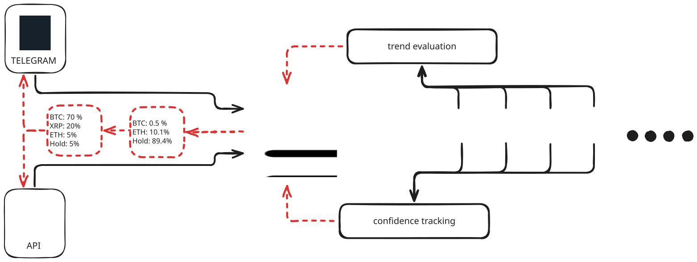

The algorithm
The bot runs continuously in the background, watching the crypto market and deciding which coins to hold and which to avoid. You interact with it through two interfaces — both feed into the same engine.

Two ways to connect
The free Telegram bot is the simplest way to start. Send it a message and it replies with portfolio updates, charts, and signals.
The API is for advanced users who want to connect the bot to their own scripts and trading pipelines via webhooks.
Both use the exact same backend. The bot doesn't care how you ask — the logic is identical.
Trend evaluation
Every coin gets scored based on price trends over configurable time windows. Longer windows give more reliable signals; shorter ones react faster to changes.
If the trend is neutral or bearish, the bot doesn't invest. It stays in stablecoins and waits for better conditions.
Confidence tracking
On top of trends, every coin gets a confidence score based on how consistently it behaves.
Sudden uptrends after a prolonged downfall are flagged as suspicious. Erratic volatility pushes a coin down the list, while steady, predictable performers rise to the top.
Portfolio rotation
Combining trend scores and confidence, the bot selects the best coins at each rotation and tells you exactly what the new portfolio looks like.
Underperforming coins are rotated out. Stronger trends are rotated in. If nothing looks reliable, the bot holds everything in stablecoins and sits tight.